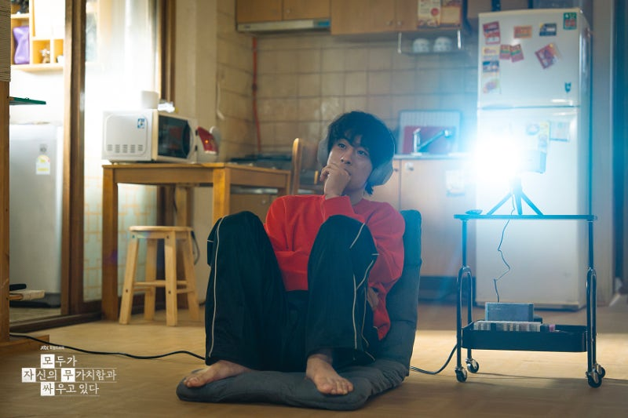
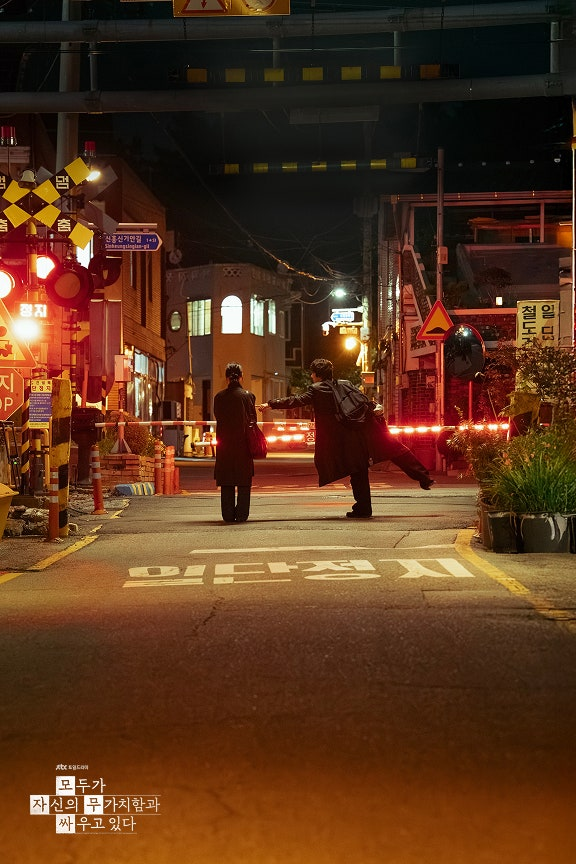
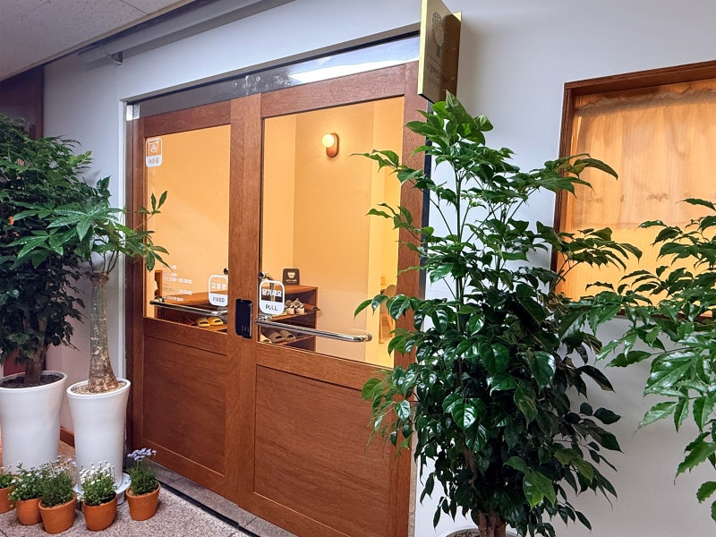

우리가 진짜로 회복해야 할 것: 무가치함 가운데서 자신의 진짜 가치를 찾아가기 요즘 JTBC 드라마, <모두가 자신의 무가치함과 싸우고 있다>라는 드라마를 보고 있습니다. 이 드라마를 보면서 이 '무가치함'이라는 것에 대해 생각해 보게 됩니다. 우리는 우리 안의 '무가치함'이라는 감정과 치열하게 싸워야 한다고 생각합니다. 사탄은 끊임없이 우리를 무가치한 존재로 여기게 만듭니다. 그리고 우리는 그 무가치함이 들통날까봐 두려워서 감추려고 애를 쓰며 살아갑니다.
드라마의 주인공인 황동만(구교환 배우)도 자신의 무가치함이 들통이 날까 봐 두려워서... 더 큰 소리를 내고, 더 오버를 하며 시끄럽게 합니다.주변 사람들이 자신을 다 싫어한다는 것을, 자신을 무가치한 인간이라고 생각하는 것을 모두 다 느끼고 알면서도.... 애써 외면하며 더 크게 다른 사람들을 험담하고 비판하며 자신의 무가치함을 인식하지 않으려 회피합니다. 우리 모두다 정도의 차이가 있을뿐입니다. 우리도 황동만과 다르지 않습니다.

우리는 우리 자신의 무가치함을 들키지 않으려 더 밝게 웃고, 더 열심히 일하며, 속으로는 무너져 내리면서도 겉으로는 괜찮은 척, 즐거운 척, 행복하다고 자기위안을 하며 살아갑니다. 그렇게 사탄은 우리에게 더 더 ‘무엇인가를 더 하라’고 부추깁니다. 바쁘게 움직이는 것이 더 가치 있는 삶이라 속이며, 우리 자신이 무가치한 존재라는 것을 인식하지 못하도록.... 우리가 우리의 무가치함을 인식하고 하나님을 바라보고 기도하지 못하도록 막고 있습니다. 바쁘게 바쁘게 무엇인가를 해내느라... 정작 정말 중요한 자기 인식을 할 수 없고, 그렇기 때문에 정직하게 진실되게 하나님 앞에 서지 못합니다.

우리는 주일마다 교회를 가고, 금요기도회, 새벽기도회, 매일 말씀묵상의 시간등 을 하지만 정작 그 시간 가운데 하나님을 만나지 못합니다. 그저 신앙이 좋은 척, 기쁜 척, 은혜받은 척하며 살아갈 뿐입니다. 물론 그 순간은 은혜 받아서 괜찮았고, 잠시 기뻤습니다. 그러나 속지 말아야 합니다. 이 기쁨이 우리의 신앙과 삶에서 피어나는 하나님이 주신 그 기쁨인지, 잠시 자기만족와 위안은 아니었는지... 우리는 이 거짓된 속삭임을 분별해야 합니다. 자신의 무가치함을 깨닫는 것. 그리고 그 무가치함을 솔직하게 인정하는 것... 바로 그 자리에서 진정한 회복이 시작됩니다. 자신의 무가치함을 깨닫게 되면, 자포자기하며 무기력해지는 것이 아니라... 진정으로 하나님을 보게 됩니다.
진짜 자신의 모습과 그리고 그 모습을 그대로 인정하시고 담아주시는 그 자리에 있는 나여도 괜찮다고 하시는 하나님을 바라볼 수 있어야 합니다. 하나님은 우리의 무가치함을 무시하지도 비판하지도 않으시며, 우리 모습 그대로를 존중하십니다. 그리고 우리가 자신의 무가치함을 회피하지 않고 있는 그대로 인정하며 하나님 앞에 나아오기를 기다리십니다. 자신의 무가치함을 직면하는 일은 결코 쉬운 일은 아닙니다. 그러나 하나님은 우리들이 각자의 무가치함을 마주하며 직면할 수 있기를 그리고 그 직면을 통해 하나님을 바라보고, 하나님이 주신 자신만의 가치를 발견하기를 기다리십니다. 무가치함을 인정하고 수용할 때, 우리는 우리안에 있는 각자의 가치를 찾고, 하나님이 지으신 목적대로 가치있게 살아갈 수 있을 것입니다.
